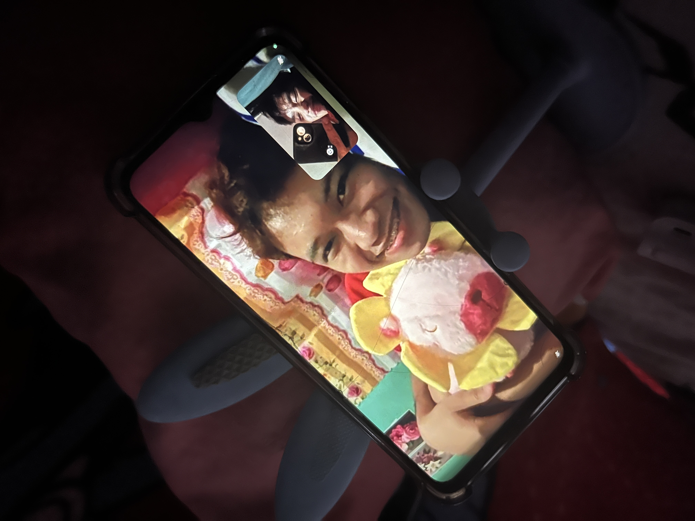

For My Nico
I tried my very best. Sana magustohan mo 🥹
To the person I love,
Hi, asawa! I just want to greet you a happy birthday to you, my baby!!! ✨ Thank you so much for being the strongest soldier in this relationship. Thank you for being my inspiration me every gising, every sipag, every pasok sa school, every pag uwi kung saan man ako galing. Maraming salamat sa love na pinaramdam mo sa akin specially nung mga early days natin. Thank you kasi hindi mo ako sinukuan, hindi mo akong hinayaan umalis, to the point na nag beg kapa
honestly speaking, i didn’t expect na ganon ang gagawin mo sa akin kasi syempre early weeks pa lang ata yon. wala pa tayong month non? anyways, maraming maraming salamat sa pakikinig mo sa akin, sa kwento, mapa personal, jokes, serious, corny, horny, or kahit ano pang sides meron ako. kahit may times na hindi ako sumasang-ayon sa mga gusto mo. to the point na palagi ako may disclaimer, kasi ayoko ng away.
thank you sa patience sa kakulitan ko, kaharutan ko, kalibugan ko, (OO na inaamin ko na) katandaan ko, kasabugan ko, “GURANG”. Thank you talaga thank you sa trust na binigay mo sa akin. mapa-deepest secrets, horny secrets, insecurities, bubbly sides, harot sides, hyper side, lahat lahat ng personalities and qualities na pinakita mo sa akin. i really do appreciate all of those openess
thank you sa gifts nitong mga nakakaraan, sobrang naaapprieciate ko sya. sobrang sarap sa feeling na nawala na yung depression ko, bihira na ako magka-anxiety attacks. story time: kapag ganitong marami akong work loads (including: activities, friends, family, orgs, classmates, personal), sa maraming patong patong na gawain at emotions na to, supposedly, madalas na anxiety attacks ko nito. AS IN lahat na lang inaaway ko. But, since nakilala kita as in never or once ko na lang ulit sya naranasan. well hindi naman kasi agad-agad sya talaga mawawala eh. but the thing here is, simula talaga nung dumating ka, pinaramdam mo na may care ka, may love, may support ka sa akin. nawala ehh… so thank you so much sa lahat ng iyon.
i just want to say sorry about sa times na sumasobra kakulitan ko, harot ko, kalibugan ko, pagiging insensitive ko. also pagkukulang ko. sorry sa parents ko, na hindi ako matanggap, well wala naman syang problema sa iyo eh. pero its just me na ayaw nila ako makipag relasyon sa lalaki. but, ngayon, i don’t care what they say about us, especially now. wala yan. i know na someday, when they see us happy, successful, full of love and support for each other. i believe and i prayed na matatanggap talaga nila sorry sa late na gift. kasi alam mo na yung ulan ulan, walang baon, walang ipon, walang pera. but still, meron at meron naman me maibibigay. not exactly on your birthday, but i’m sure na meron at meron ka parin naman gifts mula sa akin. and sana magustohan mo sya kahit very cheap and simple lang sya
well, since this is a birthday letter. syempre dapat meron tayo wish… 20 wishes for my asawa: 1. wish ko, sana matupad lahat ng wish mo, manifestation, prayers mo 2. wish ko, wag mawala ng pag-asa at manalig palagi kay Lord 3. wish ko, mahalin mo sarili mo kung paano mo ako mahalin 4. wish ko, never mo nang sasaktan sarili mo 5. wish ko, na wag mo i-pressure sarili mo 6. wish ko, yung kabutihan ng health mo 7. wish ko, makapagtapos ka ng pag-aaral mo with or without flying colors 8. wish ko, magkasama pa kayo ni mami mo nang matagal 9. wish ko, mas maging strong ka sa mga challenges na kakaharapin mo 10. wish ko, humaba pa ang pasensya mo 11. wish ko, mahalin mo yung mga tao na nagmamahal sayo 12. wish ko, matupad lahat ng mga pangarap mo kasama ako 13. wish ko, na mag-travel us together while enjoy our lives, jobs, passion 14. wish ko, ikaw na ang una at huli kong mahahalin 15. wish ko, ikaw lang ang luluharan ko at magsasabi ng “will you marry me” 16. wish ko, na ikaw lang ang magsusuot ng singsing sa daliri ko 17. wish ko, ikaw na mapapangasawa ko 18. wish ko, ikaw lang kasama ko sa magiging tirahan natin 19. wish ko, ikaw lang matitira ko halos araw-araw 20. wish ko, ako lang ang magmamahal sayo ng ganito at ikaw lang ang magmamahal sa akin ng ganito
Again, happy happy happy birthday to my future asawa. mahal na mahal kita palagi. nandito ako, hindi kita iiwan, mamahilin kitang buong buo, susuporta sayo hanggang dulo. I love you, baby! Enjoy your day kahit may pasok ka hehehe
With all my love,
Your Suitor
Our Little Memories ♡
A collection of little moments that became some of my favorite memories with you.
A moment I'll always remember

One of my favorite days with you ♡
A memory worth keeping
Our little happy moment 🌸
One of many
Another memory with my favorite person
Forever one of my favorites
Our Song 🎧
A little song that reminds me of you.
Libu-libong buwan (uuwian)
Kyle Raphael